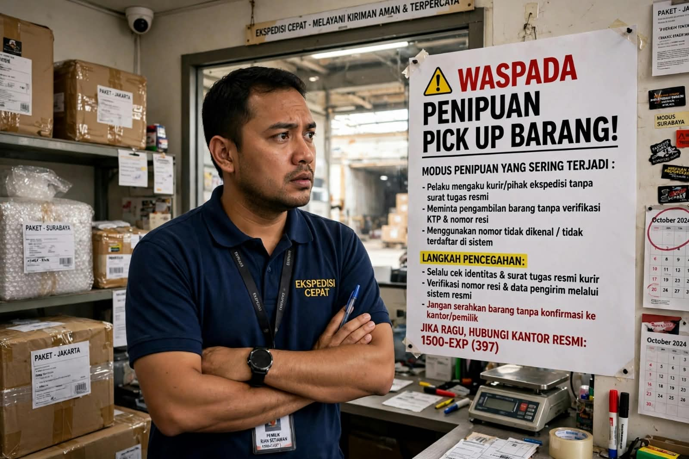

8 Modus Penipuan Pickup Barang Pabrik yang Wajib Diwaspadai Pemilik Ekspedisi

Bisnis ekspedisi tidak hanya berhadapan dengan persoalan tarif ongkir, keterlambatan pengiriman, dan kerusakan paket. Ada risiko lain yang juga harus diperhatikan, yaitu penipuan ketika petugas diminta mengambil barang di pabrik, gudang perusahaan, toko, maupun rumah perorangan.
Permintaan pickup dalam jumlah besar sering kali terlihat sebagai peluang bisnis yang menarik. Apalagi jika calon pelanggan mengaku sebagai karyawan perusahaan, bagian purchasing, supplier, distributor, atau pemilik usaha yang rutin mengirimkan barang.
Namun, pemilik ekspedisi perlu memahami bahwa tidak semua orang yang meminta pengambilan barang memiliki kewenangan untuk menyerahkan barang tersebut. Ada kemungkinan identitas digunakan tanpa izin, pesanan dibuat secara fiktif, dokumen dimanipulasi, atau barang diambil oleh pihak yang tidak berhak.
Berikut delapan modus dan skenario risiko yang perlu diketahui oleh pemilik ekspedisi, agen pengiriman, pengusaha logistik, serta petugas pickup lapangan.
Butuh Informasi Pengiriman Barang?
Konsultasikan kebutuhan pengiriman paket, dokumen, dan barang usaha melalui Lion Parcel Bandung POS101.
💬 Chat WhatsApp 0851-8309-04861. Mengaku sebagai Karyawan Pabrik atau Perusahaan
Salah satu risiko terbesar adalah seseorang mengaku sebagai karyawan perusahaan besar, bagian purchasing, staf gudang, atau bagian pengiriman. Orang tersebut kemudian menghubungi ekspedisi dan meminta petugas mengambil barang di lokasi pabrik.
Agar terlihat meyakinkan, pelaku bisa menggunakan nama perusahaan, logo, foto profil, kartu identitas, bahkan tanda tangan digital yang menyerupai dokumen perusahaan.
Masalahnya, seseorang yang mengetahui nama perusahaan belum tentu benar-benar bekerja di sana. Bahkan karyawan yang benar-benar bekerja di sebuah perusahaan belum tentu mempunyai wewenang untuk mengeluarkan barang dari gudang.
Langkah pencegahan:
- Mintalah nama lengkap dan jabatan pihak yang mengajukan pickup.
- Pastikan nomor telepon berasal dari kontak perusahaan yang dapat diverifikasi.
- Hubungi nomor kantor atau penanggung jawab perusahaan melalui jalur independen, bukan hanya nomor yang diberikan pemesan.
- Konfirmasi kepada bagian gudang atau security sebelum petugas datang.
- Jangan menganggap kartu identitas sebagai satu-satunya bukti kewenangan mengambil barang.
2. Menggunakan Surat Jalan atau Purchase Order Palsu
Modus berikutnya adalah menggunakan dokumen yang terlihat resmi untuk meyakinkan petugas ekspedisi. Dokumen tersebut bisa berupa purchase order (PO), delivery order (DO), surat jalan, formulir pengeluaran barang, atau bukti pemesanan.
Pelaku mungkin mengirimkan dokumen melalui WhatsApp atau email sebelum meminta petugas mengambil barang di gudang.
Padahal, dokumen digital dapat dibuat atau dimanipulasi. Logo perusahaan, nama penanggung jawab, nomor dokumen, dan tanda tangan belum tentu membuktikan bahwa pengeluaran barang telah mendapatkan persetujuan.
Langkah pencegahan:
- Verifikasi nomor PO atau surat jalan kepada perusahaan penerbit.
- Pastikan barang yang diambil sesuai dengan dokumen.
- Mintalah konfirmasi dari bagian gudang atau pejabat yang berwenang.
- Periksa apakah nomor dokumen benar-benar tercatat dalam sistem perusahaan.
- Jangan mengambil barang hanya berdasarkan foto dokumen yang dikirim melalui WhatsApp.
3. Menggunakan Resi atau Informasi Pengiriman untuk Mengambil Barang Tanpa Izin
Ini merupakan risiko yang pernah terungkap dalam kasus resmi Kepolisian Republik Indonesia.
Dalam kasus pencurian barang elektronik yang diberitakan melalui Tribratanews Polri, seorang pelaku mengaku sebagai karyawan perusahaan dan meminta informasi resi penjualan kepada operator ekspedisi. Setelah mendapatkan informasi tersebut, pelaku mengirimkan pengemudi ojek online untuk mengambil barang dengan alasan diperintahkan oleh pemilik barang.
Akibat perbuatan tersebut, sebanyak 28 barang elektronik berupa iPhone, MacBook, dan iPad dengan nilai sekitar Rp337,45 juta berhasil diambil.
Kasus tersebut menunjukkan bahwa informasi resi dan data pengiriman tidak boleh diberikan sembarangan. Informasi operasional yang terlihat sederhana dapat dimanfaatkan untuk meyakinkan pihak lain agar menyerahkan barang.
Langkah pencegahan:
- Batasi akses informasi resi hanya kepada pihak yang berkepentingan.
- Jangan memberikan data pelanggan atau detail barang kepada orang yang tidak terverifikasi.
- Konfirmasi identitas pengemudi atau pihak yang ditugaskan mengambil barang.
- Pastikan pengirim barang telah menyetujui nama penerima pickup.
- Gunakan prosedur serah terima barang yang mencatat identitas petugas.
Referensi kasus: Polisi Tangkap Pencuri Barang Elektronik dengan Modus Penyalahgunaan Informasi Resi – Tribratanews Polri.
4. Mengirimkan Bukti Transfer Palsu Setelah Barang Diambil
Pemilik ekspedisi juga perlu waspada terhadap pelanggan yang menjanjikan pembayaran melalui transfer bank, tetapi hanya memperlihatkan screenshot bukti transaksi.
Dalam beberapa kasus penipuan yang diungkap kepolisian, pelaku menggunakan bukti transfer hasil editan digital. Bahkan ada yang mengubah nominal, tanggal, dan jam transaksi agar terlihat sesuai dengan tagihan.
Modus ini bisa menjadi risiko ketika biaya pickup, biaya pengiriman, atau pembayaran jasa logistik disepakati akan ditransfer setelah barang diambil.
Bank Indonesia pada 11 November 2026 juga mengingatkan bahwa bukti pembayaran berupa gambar dapat dimanipulasi, termasuk dengan bantuan teknologi AI.
Langkah pencegahan:
- Jangan menganggap screenshot sebagai bukti pembayaran yang sudah diterima.
- Periksa mutasi rekening atau notifikasi transaksi masuk.
- Pastikan nominal dan nama penerima sesuai.
- Jangan menyerahkan barang jika pembayaran yang menjadi syarat penyerahan belum terkonfirmasi.
- Terapkan aturan pembayaran yang jelas sebelum pickup dilakukan.
Referensi resmi: Bank Indonesia – Cara Memastikan Pembayaran QRIS Benar-Benar Masuk .
5. Meminta Barang Dipindahkan ke Alamat Pickup yang Berbeda
Perhatikan apabila pelanggan meminta petugas mengambil barang di alamat yang berbeda dari lokasi awal yang sudah dikonfirmasi.
Contohnya, pemesan mengaku sebagai bagian dari perusahaan di sebuah kawasan industri. Namun, ketika petugas hampir sampai, ia meminta pengambilan dipindahkan ke gudang lain, rumah pribadi, lokasi parkir, atau tempat pertemuan tertentu.
Perubahan alamat tidak otomatis berarti penipuan. Namun, perubahan mendadak tanpa alasan yang jelas dapat menjadi tanda bahaya, terutama jika pihak yang menyerahkan barang berbeda dari pihak yang sebelumnya melakukan pemesanan.
Langkah pencegahan:
- Pastikan alamat pickup sesuai dengan lokasi yang disetujui pemilik barang.
- Konfirmasi perubahan alamat kepada penanggung jawab perusahaan.
- Jangan mengikuti perubahan lokasi hanya berdasarkan instruksi melalui pesan singkat.
- Catat alamat awal dan alamat perubahan.
- Jika ada ketidaksesuaian, tunda pengambilan sampai mendapatkan konfirmasi resmi.
6. Meminta Petugas Ekspedisi Membayar Biaya Tambahan atau Uang Muka
Pemilik ekspedisi perlu berhati-hati jika seseorang menawarkan pekerjaan pickup dalam jumlah besar, tetapi meminta petugas membayar sejumlah uang terlebih dahulu.
Contohnya, calon pelanggan mengatakan barang sudah siap dikirim, tetapi petugas harus membayar uang administrasi gudang, biaya akses kawasan industri, uang jaminan, biaya pembukaan dokumen, atau sejumlah biaya lain yang tidak jelas.
Risiko lainnya adalah pelaku meminta petugas membayarkan biaya tertentu kepada rekening pribadi dengan janji bahwa uang tersebut akan diganti setelah barang diambil.
Langkah pencegahan:
- Jangan mengeluarkan uang pribadi untuk biaya yang tidak tercantum dalam kesepakatan.
- Pastikan setiap biaya memiliki dasar dan bukti resmi.
- Verifikasi pembayaran langsung kepada perusahaan terkait.
- Jangan mentransfer uang ke rekening pribadi yang tidak memiliki hubungan jelas dengan transaksi.
- Laporkan permintaan pembayaran mencurigakan kepada pemilik atau manajemen ekspedisi.
7. Barang Diserahkan oleh Orang yang Tidak Memiliki Kewenangan
Risiko tidak hanya berasal dari orang yang memesan jasa ekspedisi. Pihak yang menyerahkan barang di lokasi pickup juga harus diperiksa kewenangannya.
Misalnya, seseorang mengaku sebagai staf gudang, tetapi tidak dapat menunjukkan bukti bahwa dirinya berwenang mengeluarkan barang. Ada juga kemungkinan barang milik perusahaan diserahkan tanpa persetujuan pemilik atau penanggung jawab yang sah.
Dalam salah satu pengungkapan kasus oleh Polres Gunungkidul, polisi menjelaskan modus penggelapan dengan membuat faktur order fiktif agar barang dapat diambil dari gudang perusahaan. Kasus ini menunjukkan bahwa dokumen dan proses pengeluaran barang perlu diverifikasi, termasuk ketika pihak yang terlibat tampak mengenal lingkungan perusahaan.
Langkah pencegahan:
- Pastikan barang memang telah mendapatkan persetujuan untuk dikeluarkan.
- Mintalah konfirmasi kepada bagian gudang atau penanggung jawab resmi.
- Catat nama orang yang menyerahkan barang.
- Dokumentasikan proses serah terima dengan izin pihak terkait.
- Jangan mengambil barang jika terjadi perselisihan atau perbedaan informasi di lokasi.
Referensi: Polres Gunungkidul – Pengungkapan Kasus Faktur Order Fiktif untuk Mengambil Barang dari Gudang .
8. Menggunakan Pesan atau File Digital Palsu untuk Menipu Petugas
Penipuan modern tidak selalu dilakukan secara langsung. Pelaku dapat menggunakan WhatsApp, email, tautan palsu, dokumen elektronik, atau file yang mengaku sebagai bukti pengiriman.
Pusiknas Bareskrim Polri pernah mengingatkan masyarakat mengenai modus penipuan berkedok pesan salah kirim paket. Pelaku mengaku sebagai kurir, kemudian mengirimkan file APK yang disebut sebagai dokumen atau resi paket. File tersebut berpotensi membahayakan perangkat dan data keuangan korban.
Dalam operasional ekspedisi, petugas dan pemilik usaha juga harus waspada ketika menerima file yang tidak jelas sumbernya, terutama jika diminta memasang aplikasi, memasukkan PIN, OTP, atau membuka tautan tertentu.
Langkah pencegahan:
- Jangan memasang file APK dari nomor yang tidak dikenal.
- Jangan memberikan PIN, password, atau OTP kepada siapa pun.
- Hindari membuka tautan mencurigakan yang mengatasnamakan perusahaan atau bank.
- Gunakan aplikasi resmi yang diperoleh dari sumber terpercaya.
- Pastikan komunikasi operasional menggunakan kontak yang sudah diverifikasi.
Referensi: Pusiknas Bareskrim Polri – Waspada Penipuan Berkedok Pesan Salah Kirim Paket .
📍 Lokasi Lion Parcel Bandung POS101 Nanjungmekar
Jl. Raya Barat Cicalengka RT 1 RW 1, Nanjung Mekar, Rancaekek, Kabupaten Bandung, Jawa Barat.
SOP Aman Sebelum Petugas Ekspedisi Mengambil Barang di Pabrik
Untuk mengurangi risiko penipuan, pemilik ekspedisi sebaiknya memiliki prosedur standar sebelum menerima permintaan pickup, khususnya untuk barang bernilai tinggi atau pengiriman dalam jumlah besar.
Berikut checklist sederhana yang dapat diterapkan oleh pemilik agen dan petugas lapangan:
Checklist Verifikasi Pickup
- Identitas pemesan sudah diverifikasi.
- Nomor kontak perusahaan atau pemilik barang sudah dikonfirmasi.
- Alamat pickup sesuai dengan informasi yang disepakati.
- Surat jalan, PO, atau dokumen pengeluaran barang sudah diperiksa jika diperlukan.
- Pihak yang menyerahkan barang memiliki kewenangan.
- Jenis, jumlah, dan kondisi barang sesuai dengan dokumen.
- Ketentuan pembayaran sudah disepakati dan diverifikasi.
- Barang sudah dicatat dalam bukti serah terima.
- Foto dokumentasi dan informasi pengambilan disimpan sesuai prosedur.
- Jika ada kejanggalan, pickup ditunda sampai mendapatkan konfirmasi.
Bagaimana Jika Petugas Sudah Terlanjur Mengambil Barang yang Mencurigakan?
Jika setelah pengambilan muncul dugaan bahwa barang berasal dari transaksi tidak sah atau diserahkan oleh orang yang tidak berwenang, jangan mengabaikannya.
Pemilik ekspedisi perlu segera melakukan langkah berikut:
- Hubungi pihak pemesan dan perusahaan atau pemilik barang melalui kontak yang sudah diverifikasi.
- Simpan percakapan WhatsApp, email, dokumen, nomor telepon, dan bukti transaksi.
- Catat identitas pengemudi, petugas pickup, kendaraan, waktu, dan lokasi pengambilan.
- Jangan mengubah, menghilangkan, atau memusnahkan bukti yang berkaitan dengan kejadian.
- Koordinasikan dengan pihak manajemen dan pihak berwenang apabila terdapat indikasi tindak pidana.
- Jika barang masih berada dalam penguasaan ekspedisi, jangan menyerahkan atau memindahkannya sembarangan sebelum memperoleh arahan yang tepat.
Kesimpulan: Jangan Mengambil Barang Hanya Berdasarkan Kepercayaan
Permintaan pickup barang dari pabrik, gudang, toko, maupun perorangan dapat menjadi peluang bisnis yang baik bagi perusahaan ekspedisi. Namun, setiap permintaan harus melewati proses verifikasi yang memadai.
Modus penipuan dapat melibatkan identitas karyawan palsu, surat jalan yang dimanipulasi, penyalahgunaan informasi resi, bukti transfer palsu, hingga pengambilan barang tanpa kewenangan.
Karena itu, prinsip penting bagi pemilik ekspedisi adalah memastikan siapa yang memesan, siapa pemilik barang, siapa yang berhak menyerahkan barang, dan apakah transaksi benar-benar telah disetujui.
Jangan mudah tergiur nilai pickup besar, janji pengiriman rutin, atau nama perusahaan terkenal. Lebih baik menunda satu pengambilan barang untuk melakukan verifikasi daripada menghadapi kerugian yang jauh lebih besar.
Dalam bisnis logistik, kepercayaan memang penting. Namun, kepercayaan harus didukung oleh dokumen, komunikasi yang terverifikasi, dan prosedur operasional yang jelas.
Referensi dan Sumber Informasi Resmi
Artikel ini disusun dengan mengacu pada pemberitaan dan imbauan dari lembaga resmi berikut:
-
Tribratanews Polri – Polisi Tangkap Pencuri Barang Elektronik dari Ekspedisi dengan Modus Penyalahgunaan Informasi Resi.
Baca sumber resmi -
Polres Gunungkidul – Pengungkapan Kasus Penggelapan dengan Modus Faktur Order Fiktif.
Baca sumber resmi -
Bank Indonesia – Cara Memastikan Pembayaran QRIS Benar-Benar Masuk, 11 November 2026.
Baca sumber resmi -
Pusiknas Bareskrim Polri – Waspada Penipuan Berkedok Pesan Salah Kirim Paket.
Baca sumber resmi -
Polda Jabar – Pengungkapan Penipuan Online dengan Modus Bukti Transfer Palsu.
Baca sumber resmi
Catatan: Delapan modus dalam artikel ini merupakan kombinasi contoh kasus yang pernah diungkap aparat dan skenario risiko operasional untuk edukasi pelaku usaha ekspedisi. Bukan daftar klasifikasi resmi dari Kepolisian RI.
Informasi Lion Parcel Bandung POS101
Nama Agen: Lion Parcel Bandung POS101 Nanjungmekar Rancaekek
Jam Operasional: Senin–Minggu, 08.00–20.00 WIB
Alamat: Jl. Raya Barat Cicalengka RT 1 RW 1, Nanjung Mekar, Rancaekek, Kabupaten Bandung, Jawa Barat
WhatsApp: 0851-8309-0486